ส่งเอกสารผลการเรียน 1/2569กลุ่มงานวัดผลและประเมินผล · โรงเรียนพรตพิทยพยัต
คู่มือฉบับเดียวจบสำหรับครูผู้สอนทุกท่าน อธิบายว่าต้องเตรียมเอกสารอะไร ลงนามตรงไหน จัดชุดอย่างไร และส่งที่ใครภายในเวลาใด พร้อมวิดีโอสาธิตและตัวอย่างเอกสารจริง
คลิกที่แต่ละขั้นเพื่อดูรายละเอียด สองวันหลักคือวันจันทร์ที่ 21 กันยายน (ส่งเอกสาร) และวันอังคารที่ 22 กันยายน (ครูที่ปรึกษาตรวจรอบสุดท้าย)
จากกำหนดการงานวัดผลและประเมินผล วันที่เน้นสีคือช่วงที่เกี่ยวกับการส่งและตรวจเอกสารโดยตรง
ปพ.5 และร่องรอยคะแนน ส่งทุกห้องทุกรายวิชาที่สอน ส่วนแบบขออนุมัติผล “ร” ส่งเฉพาะรายวิชาที่มีนักเรียนติด “ร” คลิกที่ภาพเพื่อขยาย
พิมพ์เฉพาะ 3 ส่วน ได้แก่ ปก, ปพ5-2 (ข้อมูลการบันทึกคะแนนปลายภาคเรียน) และ ปพ5-2 อ่านคิดวิเคราะห์ ดูวิธีพิมพ์ได้จากวิดีโอสาธิต
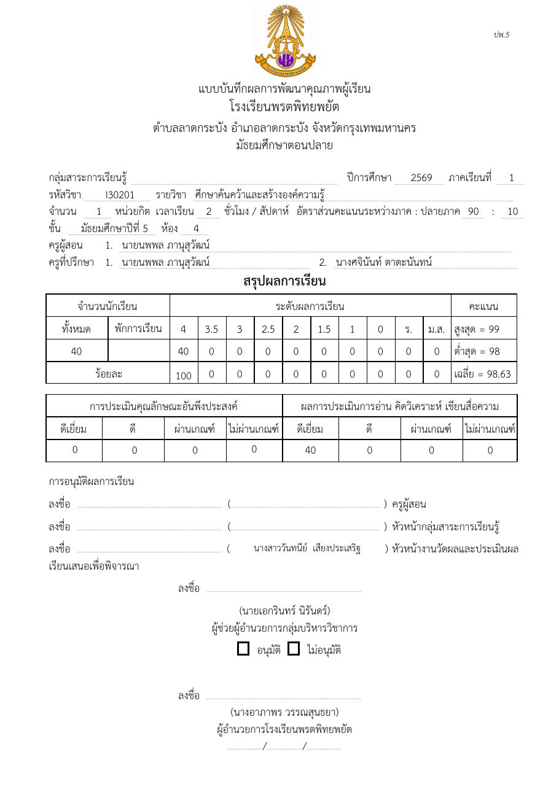
ดาวน์โหลดจากเว็บไซต์โรงเรียน หรือโฟลเดอร์ “ฟอร์ม วช-20 เอกสารร่องรอย ปพ.5” ใน Google Drive กรอกคะแนนให้ครบสมบูรณ์ทุกห้องที่สอน แล้วพิมพ์เฉพาะแท็บของห้องที่ตนเองสอน
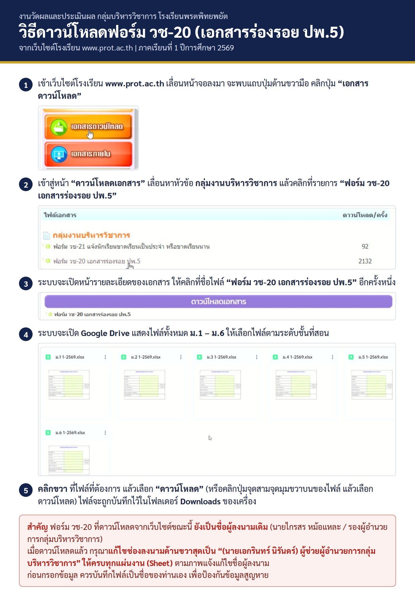
ใช้เฉพาะรายวิชาที่มีนักเรียนติด “ร” กรอกในไฟล์ Excel ต้นฉบับ (ดาวน์โหลดได้จากหน้านี้ หรือโฟลเดอร์ 00 ใน Google Drive) พิมพ์ให้พอดี 1 หน้ากระดาษ ลงนาม แล้วอัปโหลดไฟล์ Excel เข้าโฟลเดอร์กลุ่มสาระฯ ของตนใน Google Drive
ครูผู้สอนทุกท่าน ทั้งข้าราชการ พนักงานราชการ ครูอัตราจ้าง ครูผู้ช่วย และครูต่างชาติ ในทุกรายวิชาที่ตัดสินผล รวมถึงแนะแนว และกุลบุตร กุลสตรี ศรีพรต
ไม่ต้องทำแบบ “ร” และไม่ต้องอัปโหลดไฟล์ แจ้งหัวหน้ากลุ่มสาระฯ เป็นการภายในได้ แต่ยังต้องส่ง ปพ.5 และร่องรอยคะแนนตามปกติ
หลังตรวจวันที่ 22 กันยายนและแก้ไขเรียบร้อย กลุ่มงานวัดผลจะเก็บเอกสารทั้งหมดไว้เป็นหลักฐาน ไม่ส่งคืนครูผู้สอน โปรดเก็บไฟล์ต้นฉบับของท่านไว้เอง
จัดกลุ่มใหญ่ตามรายวิชา ภายในรายวิชาแยกเป็นรายห้อง เพื่อให้กลุ่มงานวัดผลนำไปแยกส่งครูที่ปรึกษาแต่ละห้องได้ทันที
เลือกบทบาทของท่านเพื่อไฮไลต์ช่องที่ต้องลงนาม ช่องที่เป็นของส่วนกลาง (หัวหน้างานวัดผลและประเมินผล นางสาววันทนีย์ เสียงประเสริฐ · ผู้ช่วยผู้อำนวยการกลุ่มบริหารวิชาการ นายเอกรินทร์ นิรันดร์ · ผู้อำนวยการโรงเรียน) ให้ส่งมาก่อน ส่วนกลางจะรวบรวมลงนามเอง
| เอกสาร (ต่อ 1 ห้อง) | ช่องลงนาม | ผู้ลงนาม | ลงเมื่อใด |
|---|---|---|---|
| ปก ปพ.5 | ครูผู้สอน | ครูผู้สอน | ก่อนส่ง 21 ก.ย. |
| หัวหน้ากลุ่มสาระการเรียนรู้ | หัวหน้ากลุ่มสาระฯ | ก่อนส่ง 21 ก.ย. | |
| หัวหน้างานวัดผลและประเมินผล (นางสาววันทนีย์ เสียงประเสริฐ) | ส่วนกลาง | หลังรับเอกสาร | |
| ผู้ช่วยผู้อำนวยการกลุ่มบริหารวิชาการ (นายเอกรินทร์ นิรันดร์) อนุมัติ / ไม่อนุมัติ | ส่วนกลาง | หลังรับเอกสาร | |
| ผู้อำนวยการโรงเรียน | ส่วนกลาง | หลังรับเอกสาร | |
| ปพ5-2 | ครูผู้สอน | ครูผู้สอน | ก่อนส่ง 21 ก.ย. |
| วัดผลกลุ่มสาระการเรียนรู้ | ครูวัดผลกลุ่มสาระฯ | ก่อนส่ง 21 ก.ย. | |
| หัวหน้ากลุ่มสาระการเรียนรู้ | หัวหน้ากลุ่มสาระฯ | ก่อนส่ง 21 ก.ย. | |
| หัวหน้างานวัดผลและประเมินผล | ส่วนกลาง | หลังรับเอกสาร | |
| ผู้ตรวจทานในกลุ่มสาระการเรียนรู้ (ช่องขวาบน) เว้นว่างไว้ | ครูวัดผลกลุ่มสาระฯ ที่เป็นผู้ตรวจ | ตรวจรอบที่ 1 | |
| ผู้ตรวจทานระหว่างกลุ่มสาระการเรียนรู้ (ช่องขวาล่าง) เว้นว่างไว้ | ครูที่ปรึกษาที่เป็นผู้ตรวจ | ตรวจรอบที่ 2 · 22 ก.ย. | |
| ปพ5-2 อ่านคิดวิเคราะห์ | ไม่มีช่องลงนาม | — | — |
| ร่องรอยคะแนน | ครูผู้สอน | ครูผู้สอน | ก่อนส่ง 21 ก.ย. |
| หัวหน้ากลุ่มสาระการเรียนรู้ | หัวหน้ากลุ่มสาระฯ | ก่อนส่ง 21 ก.ย. | |
| ผู้ช่วยผู้อำนวยการกลุ่มบริหารวิชาการ (นายเอกรินทร์ นิรันดร์) | ส่วนกลาง | หลังรับเอกสาร | |
| แบบขออนุมัติผล “ร” 1 ใบ ต่อ 1 รหัสวิชา | ครูผู้สอน | ครูผู้สอน | ก่อนส่ง 21 ก.ย. |
| หัวหน้ากลุ่มสาระการเรียนรู้ | หัวหน้ากลุ่มสาระฯ | ก่อนส่ง 21 ก.ย. | |
| หัวหน้างานวัดผลและประเมินผล (นางสาววันทนีย์ เสียงประเสริฐ) | ส่วนกลาง | หลังรับเอกสาร | |
| ผู้ช่วยผู้อำนวยการกลุ่มบริหารวิชาการ (นายเอกรินทร์ นิรันดร์) | ส่วนกลาง | หลังรับเอกสาร |
คลิกเวลาในรายการเพื่อข้ามไปยังช่วงนั้นของวิดีโอ
ความยาว 3 นาที 8 วินาที · บันทึกหน้าจอวันที่ 18 กันยายน 2569
ความยาว 28 วินาที · บันทึกหน้าจอวันที่ 18 กันยายน 2569
ชุดภาพเดียวกับที่แจ้งใน Group LINE ครูพรตฯ คลิกที่ภาพเพื่อเปิดดูขนาดเต็ม หรือบันทึกไว้ดูในโทรศัพท์
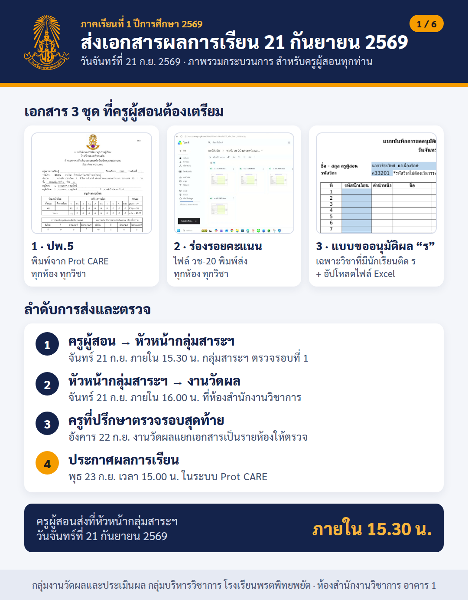
เอกสาร 3 ชุด ลำดับการส่งและตรวจ กำหนดเวลา
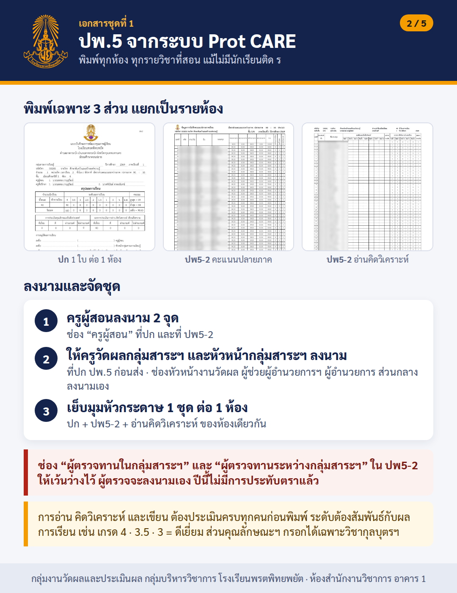
พิมพ์ 3 ส่วน แยกรายห้อง จุดลงนาม และช่องที่ต้องเว้นว่าง
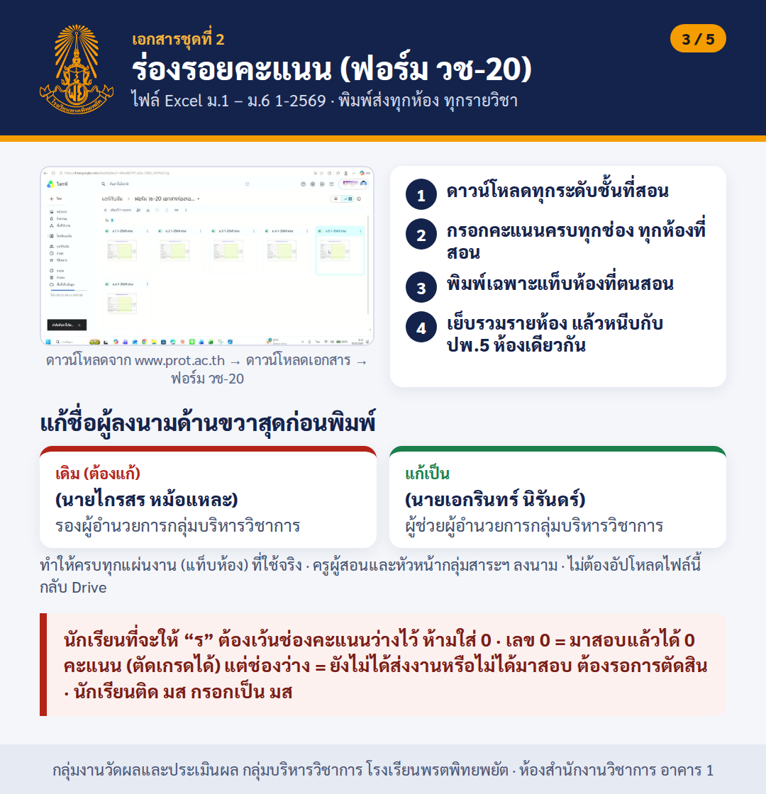
ดาวน์โหลด กรอกครบ แก้ชื่อผู้ลงนาม พิมพ์เฉพาะห้องที่สอน
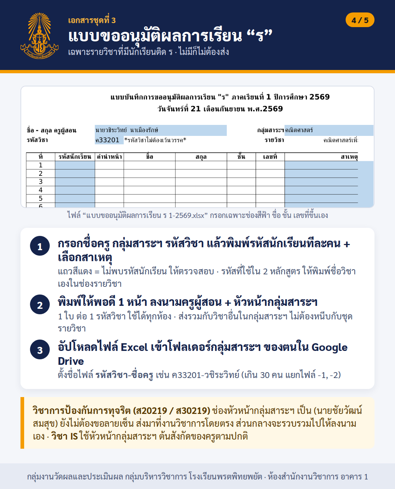
กรอกไฟล์ Excel ลงนาม 2 ฝ่าย อัปโหลดเข้าโฟลเดอร์กลุ่มสาระฯ
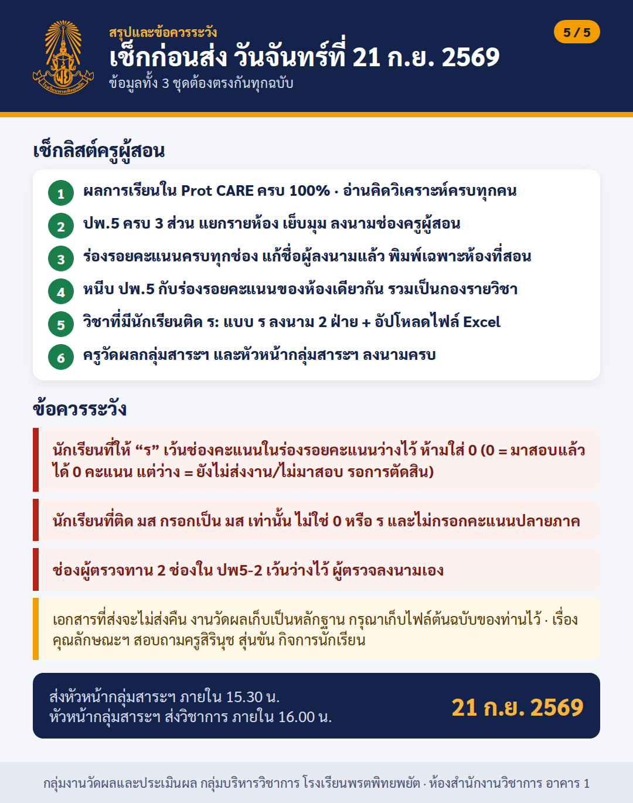
เช็กลิสต์ 6 ข้อ และข้อควรระวังก่อนส่ง
คลิกที่ภาพเพื่อเปิดดูขนาดเต็ม
5 ขั้นตอนจากเว็บไซต์โรงเรียนถึง Google Drive
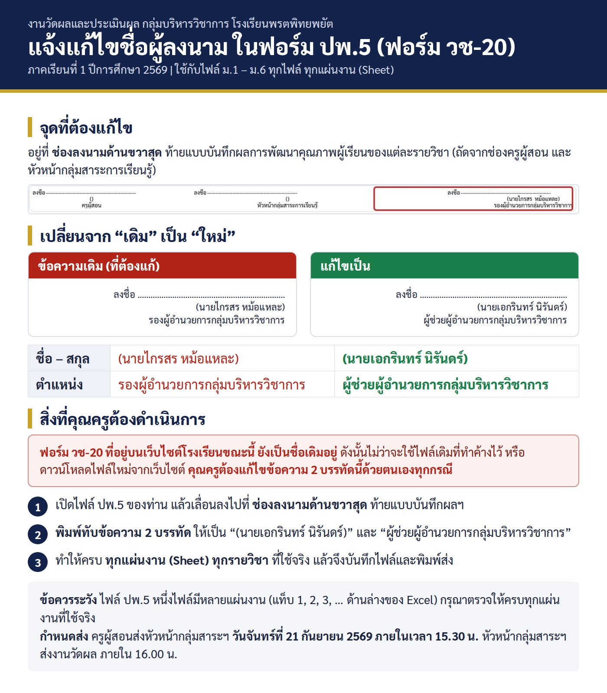
เปลี่ยนเป็น (นายเอกรินทร์ นิรันดร์) ผู้ช่วยผู้อำนวยการกลุ่มบริหารวิชาการ ให้ครบทุกแผ่นงาน
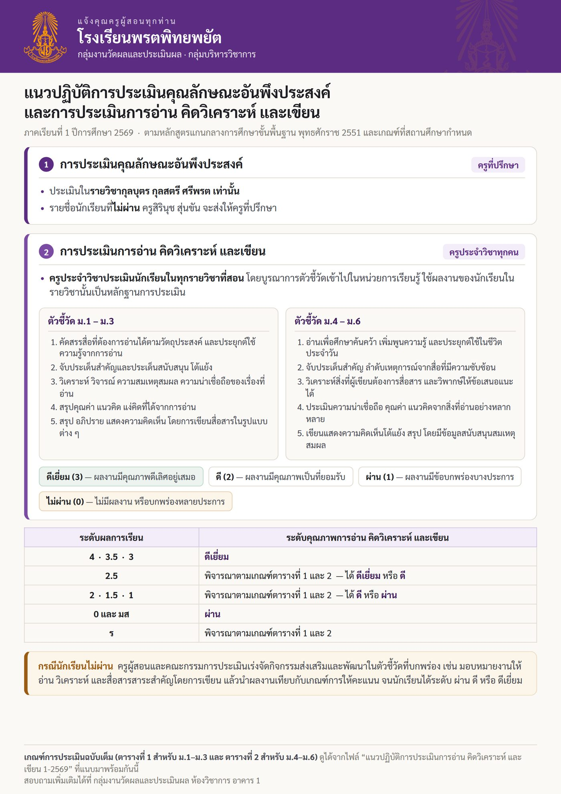
ตัวชี้วัด ระดับคุณภาพ และความสัมพันธ์กับระดับผลการเรียน
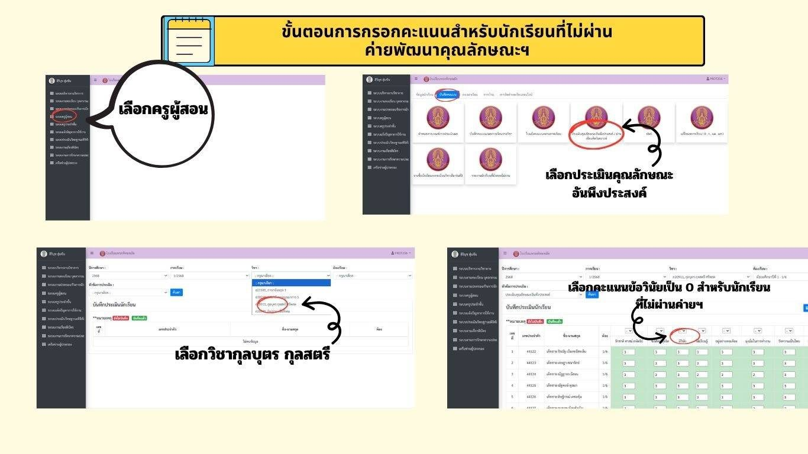
นักเรียนที่ไม่ผ่านค่ายพัฒนาคุณลักษณะฯ ให้กรอกข้อวินัยเป็น 0
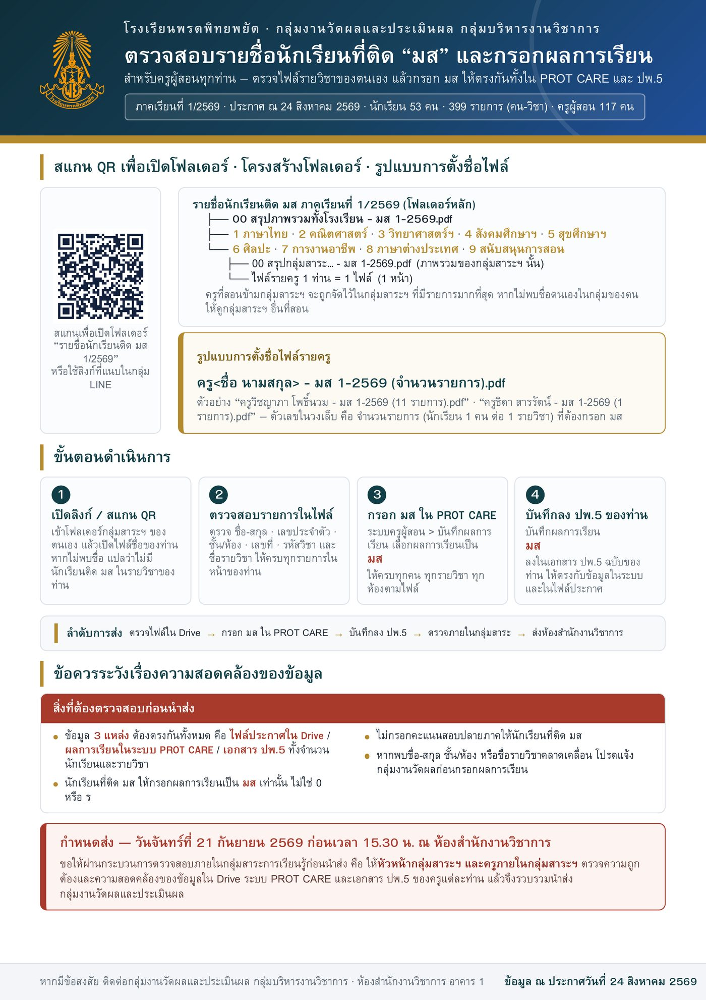
ประกาศเดิมที่ครูดำเนินการไปแล้ว ใช้อ้างอิงให้ข้อมูล มส ตรงกัน
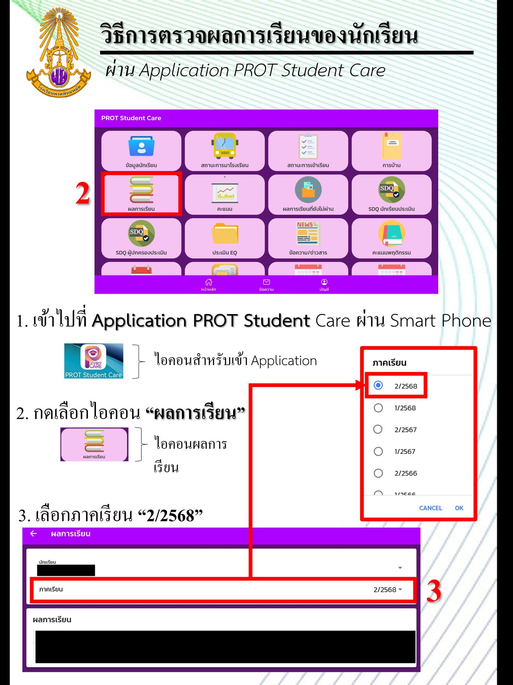
ผ่านแอป PROT Student Care หลังโรงเรียนประกาศผล
เป็นรายวิชารหัส ส แต่ครูผู้สอนมาจากทุกกลุ่มสาระฯ ในแบบขออนุมัติผล “ร” ช่องหัวหน้ากลุ่มสาระการเรียนรู้ต้องเป็น (นายชัยวัฒน์ สมสุข) หัวหน้ากลุ่มสาระฯ สังคมศึกษาฯ
ครูผู้สอนมาจากหลายกลุ่มสาระฯ เช่นกัน แต่ให้ หัวหน้ากลุ่มสาระฯ ต้นสังกัดของครูผู้สอน เป็นผู้ลงนาม และส่งตามช่องทางปกติผ่านกลุ่มสาระฯ ของตน
ปีการศึกษานี้โรงเรียนอยู่ในช่วงเปลี่ยนผ่านหลักสูตร ใช้หลักสูตรเดิมและหลักสูตรใหม่ควบคู่กัน รหัสวิชาบางรหัสจึงตรงกันแต่เป็นคนละรายวิชา ซึ่งเป็นเรื่องปกติของการปรับหลักสูตร
ในไฟล์แบบ “ร” เมื่อพิมพ์รหัสดังกล่าว ช่องรายวิชาจะขึ้นว่า “โปรดพิมพ์ชื่อรายวิชาในช่องนี้” ให้ครูพิมพ์ชื่อรายวิชาที่ตนสอนทับได้เลย
คุณลักษณะ ประเมินในรายวิชากุลบุตร กุลสตรี ศรีพรต เท่านั้น ระบบ Prot CARE เปิดให้กรอกเฉพาะรายวิชานี้ ครูประจำวิชาอื่นจึงเห็นช่องคุณลักษณะว่างเป็นปกติ สอบถามเรื่องคุณลักษณะได้ที่ ครูสิรินุช สุ่นขัน กลุ่มงานกิจการนักเรียน
การอ่าน คิดวิเคราะห์ และเขียน ครูประจำวิชาประเมินทุกรายวิชาที่สอน และต้องสัมพันธ์กับระดับผลการเรียน
ติ๊กได้เลย รายการจะถูกจำไว้ในเบราว์เซอร์ของท่าน